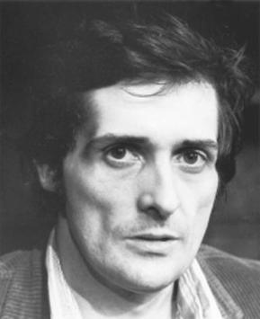
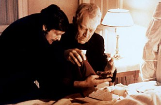
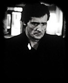

Exploring the Piazza dell’Arte: Jason Miller
Today we wrap up our series exploring the lives and works of the artists featured on the Piazza dell’Arte at Courthouse Square with the man who inspired the monument to Scranton artists, actor and playwright Jason Miller.
Miller was born John Anthony Miller on April 22, 1939, in Long Island City, Queens. His family moved to Scranton, and he attended St. Patrick’s High School and the University of Scranton. He later studied at The Catholic University of America in Washington, D.C.
His first published play was 1970’s “Nobody Hears a Broken Drum.” The play tells the story of Civil-War-era Pennsylvania coal miners who unionize and strike following a mine collapse that kills six men and touches upon the historical formation of the Molly Maguires. Already the themes that would remain important to Miller throughout his career are on display – a focus on region, religion and ethnicity; stories about working men and women; and characters struggling to define themselves in the face of rigid authority.
In 1972, Miller published his most celebrated work, “That Championship Season,” which tells the story of four high school basketball teammates and their coach who reunite after 20 years after winning a state championship and reflect on the direction their lives have taken. The play would go on to win a Pulitzer Prize, Tony Award and the New York Drama Critics Circle Award as best play of the season.
The same year he collected a Pulitzer Prize for his writing, Miller was offered his most famous acting role, the troubled Father Karras in “The Exorcist.” The film became a huge hit and Miller’s performance earned him an Academy Award nomination for Best Supporting Actor.
Miller would make several more appearances on film with more than 15 movie roles in his credits, along with television parts. In 1982, he would add screenwriting and directing to his resume with a film adaptation of “That Championship Season.” And throughout his career, he continued playwriting and acting on stage.
His last written work was “Barrymore’s Ghost” in 2000. The play is a dramatic retelling of the life of the legendary actor, John Barrymore, though it’s not difficult to see parallels to Miller’s own life. In the play, an aging actor reflects upon his life on the stage and in film, taking stock of his successes and failures, along with the dissolution of four marriages. Miller himself was thrice-divorced.
Miller lived out his later years in his native Scranton, remaining active in the local arts and theater communities. He died on May 13, 2001, of a heart attack; but in Northeastern Pennsylvania, his spirit lives on. Longtime friend actor Paul Sorvino was commissioned by the city to create a bronze bust of Miller in 2004. The same year, area writers Rodger Jacobs and Tom Flannery wrote “Go Irish: The Purgatory Diaries of Jason Miller” which was produced local by the Northeast Theatre (currently the Electric Theatre). Filmmaker Rebecca Marshall put together the documentary “Miller’s Tale” in 2007. And his artistic contributions to the city inspired the Piazza dell’Arte at Courthouse Square.
Spiritual Heir: Conor McGuigan. Not only one of the most talented actors in local theater, McGuigan is also an accomplished playwright. He is a member of the resident company of the Electric Theatre but McGuigan influence extends across music and art scenes as well. His commitment to the city and its artistic development make him the clear choice to carry on Miller’s legacy.
This article was part of a series that explored the lives and legacies of the artists featured on the Piazza dell’Arte at Courthouse Square, Scranton. It first appeared on Electric City Renaissance. Read the rest of the series.